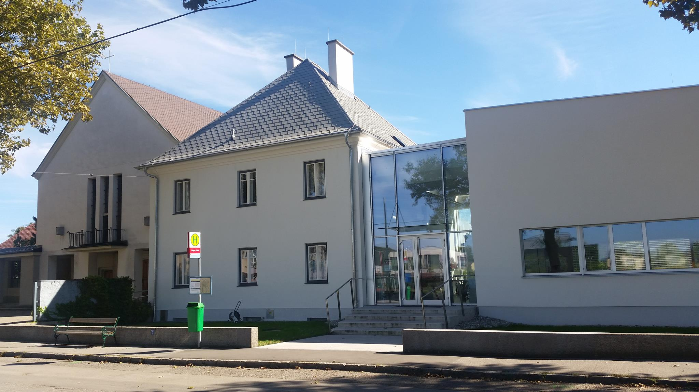

Pfarre St.Michael - St.Pölten-Wagram
Unsere Pfarre
Pfarrteam
Gruppen
Liturgie
Bilder der Pfarre
Verweise
Herzlich Willkommen!

Aktueller Pfarrbrief
Mitteilungen
Aktuelles
Facebook
Kontakt
Besucher
Pfarre Wagram
Unterwagramer Straße 48
3100 St. Pölten
Tel.: 02742/253163
Mobil: 0676/826633383
E-Mail an die Pfarre
Kanzleizeiten im Juli und August:
Montag und Mittwoch,
jeweils 8.00 - 12.00 Uhr
Sprechstunden von Pfarrer Sabinus Iweadighi (im Pfarrheim):
Mi: von 8.30 bis 9.15 Uhr
Do: von 12.30 bis 13.30 Uhr
sowie nach Vereinbarung